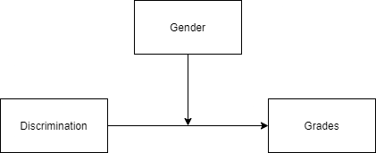

R Projects Linear Models for Data Analysis Lab 3: Moderation
Lab 3: Moderation
Overview of regression using categorical and continuous moderators with interpretation.
library(knitr) #include_graphics()
library(equatiomatic) # extract_eq()
library(psych) #describe()
library(gtsummary) #tbl_summary()
library(summarytools) #descr()
library(stargazer) #stargazer()
library(sjPlot) #tab_model()
library(interactions) #interact_plot(), sim_slopes()
library(jtools) #summ()
library(tidyverse)
Moderation
When the research hypotheses state that different categories, or levels of another variable, may have differing responses to other independent variables, we need to use interaction terms
- Also called moderation

Example: The relationship between discrimination and grades depends on prog.
Graph drawn using draw.io.
Moderation Example
Suppose you are doing a simple study on weight loss and notice that people who spend more time exercising lose more weight. Upon further analysis you notice that those who spend the same amount of time exercising lose more weight if they are more effortful. The more effort people put into their workouts, the less time they need to spend exercising. This is popular in workouts like high intensity interval training (HIIT).
Example adapted from UCLA’s seminar on decomposing, probing, and plotting interactions in R.
Read in data:
exercise <- read.csv("https://stats.idre.ucla.edu/wp-content/uploads/2019/03/exercise.csv") %>%
select(-gender) %>%
mutate(prog = factor(prog, labels = c("Jogging", "Swimming", "Reading")),
hours_scaled = as.numeric(scale(hours)))
Variable Descriptions
| Name | Labels |
| prog | |
| loss | Weight loss (continuous), positive = weight loss, negative scores = weight gain |
| hours | Hours spent exercising (continuous) |
| effort | Effort during exercise (continuous), 0 = minimal physical effort and 50 = maximum effort |
Descriptive Statistics
#Three ways of presenting descriptives:
# psych::describe()
round(describe(exercise),2)
## vars n mean sd median trimmed mad min max range
## id 1 900 450.50 259.95 450.50 450.50 333.58 1.00 900.00 899.00
## loss 2 900 10.02 14.10 7.88 9.06 15.42 -17.14 54.15 71.29
## hours 3 900 2.00 0.49 2.01 2.00 0.49 0.18 4.07 3.90
## effort 4 900 29.66 5.14 29.63 29.64 5.08 12.95 44.08 31.13
## prog* 5 900 2.00 0.82 2.00 2.00 1.48 1.00 3.00 2.00
## hours_scaled 6 900 0.00 1.00 0.01 0.00 0.99 -3.70 4.19 7.88
## skew kurtosis se
## id 0.00 -1.20 8.67
## loss 0.50 -0.64 0.47
## hours 0.07 0.47 0.02
## effort 0.00 0.01 0.17
## prog* 0.00 -1.50 0.03
## hours_scaled 0.07 0.47 0.03
# gtsummary::gtsummary()
tbl_summary(exercise,
statistic = list(all_continuous() ~ "{mean} ({sd})"),
missing = "no")
| Characteristic | N = 9001 |
|---|---|
| id | 450 (260) |
| loss | 10 (14) |
| hours | 2.00 (0.49) |
| effort | 29.7 (5.1) |
| prog | |
| Jogging | 300 (33%) |
| Swimming | 300 (33%) |
| Reading | 300 (33%) |
| hours_scaled | 0.00 (1.00) |
| 1 Mean (SD); n (%) | |
# summarytools::descr()
#print(descr(exercise), method = 'render')
Regression with a Categorical Moderator
Research Question: Does exercise program moderate the relationship between hours spent exercising and weight loss? Or, said differently, Does the relationship between the hours spent exercising and weight loss differ based on the type of exercise you do (e.g., exercise program)?
reg <- lm(loss ~ scale(hours)+prog,
data=exercise)
mod <- lm(loss ~ scale(hours)*prog,
data=exercise)
#Compare regression and moderation models
tab_model(reg, mod,show.std = TRUE, show.stat = TRUE, show.zeroinf = TRUE )
| loss | loss | |||||||||||
|---|---|---|---|---|---|---|---|---|---|---|---|---|
| Predictors | Estimates | std. Beta | CI | standardized CI | Statistic | p | Estimates | std. Beta | CI | standardized CI | Statistic | p |
| (Intercept) | 8.08 | -0.14 | 7.29 – 8.87 | -0.19 – -0.08 | 20.17 | \<0.001 | 8.14 | -0.13 | 7.41 – 8.88 | -0.19 – -0.08 | 21.68 | \<0.001 |
| hours | 1.62 | 0.11 | 1.16 – 2.07 | 0.08 – 0.15 | 6.98 | \<0.001 | 3.69 | 0.26 | 2.90 – 4.47 | 0.21 – 0.32 | 9.25 | \<0.001 |
| prog \[Swimming\] | 17.78 | 1.26 | 16.67 – 18.90 | 1.18 – 1.34 | 31.40 | \<0.001 | 17.77 | 1.26 | 16.73 – 18.81 | 1.19 – 1.33 | 33.46 | \<0.001 |
| prog \[Reading\] | -11.96 | -0.85 | -13.07 – -10.85 | -0.93 – -0.77 | -21.10 | \<0.001 | -11.85 | -0.84 | -12.89 – -10.80 | -0.91 – -0.77 | -22.29 | \<0.001 |
| hours \* prog \[Swimming\] | -0.29 | -0.02 | -1.37 – 0.80 | -0.10 – 0.06 | -0.52 | 0.605 | ||||||
| hours \* prog \[Reading\] | -5.15 | -0.37 | -6.19 – -4.11 | -0.44 – -0.29 | -9.71 | \<0.001 | ||||||
| Observations | 900 | 900 | ||||||||||
| R2 / R2 adjusted | 0.759 / 0.758 | 0.789 / 0.787 | ||||||||||
#Can also use stargazer::stargazer()
stargazer(reg, mod, type = "text")
##
## ===========================================================================
## Dependent variable:
## -------------------------------------------------
## loss
## (1) (2)
## ---------------------------------------------------------------------------
## scale(hours) 1.616*** 3.686***
## (0.232) (0.398)
##
## progSwimming 17.785*** 17.771***
## (0.566) (0.531)
##
## progReading -11.961*** -11.846***
## (0.567) (0.531)
##
## scale(hours):progSwimming -0.286
## (0.554)
##
## scale(hours):progReading -5.148***
## (0.530)
##
## Constant 8.080*** 8.143***
## (0.401) (0.376)
##
## ---------------------------------------------------------------------------
## Observations 900 900
## R2 0.759 0.789
## Adjusted R2 0.758 0.787
## Residual Std. Error 6.937 (df = 896) 6.502 (df = 894)
## F Statistic 939.491*** (df = 3; 896) 666.752*** (df = 5; 894)
## ===========================================================================
## Note: *p<0.1; **p<0.05; ***p<0.01
#Only looks at moderation
# and jtools:summ()
summ(mod)
| Observations | 900 |
| Dependent variable | loss |
| Type | OLS linear regression |
| F(5,894) | 666.75 |
| R² | 0.79 |
| Adj. R² | 0.79 |
| Est. | S.E. | t val. | p | |
|---|---|---|---|---|
| (Intercept) | 8.14 | 0.38 | 21.68 | 0.00 |
| scale(hours) | 3.69 | 0.40 | 9.25 | 0.00 |
| progSwimming | 17.77 | 0.53 | 33.46 | 0.00 |
| progReading | -11.85 | 0.53 | -22.29 | 0.00 |
| scale(hours):progSwimming | -0.29 | 0.55 | -0.52 | 0.61 |
| scale(hours):progReading | -5.15 | 0.53 | -9.71 | 0.00 |
| Standard errors: OLS |
Simple Slope Equations
The results above tell us that there is a moderation effect because the p-value for scale(hours)*program(reading) is significant. The estimate of -5.15 is not that useful on it’s own. The best way to understand is to use the estimates above and create a simple slope equation for each of the exercise programs (reading, swimming, and jogging). We do this below.
extract_eq(mod)
$$ \operatorname{loss} = \alpha + \beta_{1}(\operatorname{scale(hours)}) + \beta_{2}(\operatorname{prog}{\operatorname{Swimming}}) + \beta{3}(\operatorname{prog}{\operatorname{Reading}}) + \beta{4}(\operatorname{scale(hours)} \times \operatorname{prog}{\operatorname{Swimming}}) + \beta{5}(\operatorname{scale(hours)} \times \operatorname{prog}_{\operatorname{Reading}}) + \epsilon $$
extract_eq(mod, use_coefs = TRUE)
$$ \operatorname{\widehat{loss}} = 8.14 + 3.69(\operatorname{scale(hours)}) + 17.77(\operatorname{prog}{\operatorname{Swimming}}) - 11.85(\operatorname{prog}{\operatorname{Reading}}) - 0.29(\operatorname{scale(hours)} \times \operatorname{prog}{\operatorname{Swimming}}) - 5.15(\operatorname{scale(hours)} \times \operatorname{prog}{\operatorname{Reading}}) $$
Reading:
$$ y_{reading} = 8.14 + 3.69(hours) + 17.77(0) - 11.85(1) - 0.29(hours * 0) - 5.15 (hours * 1) $$ By dropping the terms that have a zero in it and adding the constant terms (e.g., those that have a 1), the equation simplifies to the equation below. This is the simple slope for the reading program. Another way to say it, this is the relationship between hours spent exercising and the outcome of weight loss for those who were in the reading program.
$$ y_{reading} = -3.71 - 1.46 (hours) $$
Swimming: $$ y_{swimming} = 8.14 + 3.69(hours) + 17.77(1) - 11.85(0) - 0.29(hours * 1) - 5.15 (hours * 0) $$ The simple slope for those who were in the swimming program is below:
$$ y_{swimming} = 25.91 + 3.40(hours) $$
Jogging: $$ y_{jogging} = 8.14 + 3.69(hours) + 17.77(0) - 11.85(0) - 0.29(hours * 0) - 5.15 (hours * 0) $$ The simple slope for those who were in the jogging program is below:
$$ y_{jogging} = 8.14 + 3.69(hours) $$
Looking at those three equations for each of the program time, we can see they vary both in their intercepts and their slopes. It is not directly evident just by looking at the point estimates in the table above how the combination of parameter estimates leads to the difference across the exercise programs– but simple slopes helps us!
Plotting Interactions
Plot code adapted from here (Long, 2020).
Here, we plot the interaction or simple slope plots between hours and loss and levels of prog.
The interact_plot() also plots the confidence intervals at 90%.
interact_plot(mod, pred = hours, modx = prog, interval = TRUE, int.width = 0.9, data = exercise) + theme_apa()

mod_adj <- lm(loss ~ hours_scaled*prog, data=exercise)
interact_plot(mod_adj, pred = hours_scaled, modx = prog, interval = TRUE, int.width = 0.9, data = exercise) + theme_apa()

Note that the only difference between the two interaction plots above is the scale of the x variable, hours. In the top plot, the hours variable is not scaled and in the bottom one it is. This does not change the slope, but it does change the intercept since we are moving the “zero” value in the scaled versoin.
Simple Slopes
Here, we can test the simple slopes at each level of hours spend exercising.
The results show us that for all levels of prog, there a significant association between hours spent exercising and weight loss.
Note that the slope is different for each program.
# The moderation needs to be adjusted a bit for this function to work (it doesn't like when we scale the hours variable directly in the lm function)
mod_adj <- lm(loss ~ hours_scaled*prog, data=exercise)
sim_slopes(mod_adj, pred = hours_scaled, modx = prog, johnson_neyman = FALSE)
## SIMPLE SLOPES ANALYSIS
##
## Slope of hours_scaled when prog = Reading:
##
## Est. S.E. t val. p
## ------- ------ -------- ------
## -1.46 0.35 -4.18 0.00
##
## Slope of hours_scaled when prog = Swimming:
##
## Est. S.E. t val. p
## ------ ------ -------- ------
## 3.40 0.38 8.84 0.00
##
## Slope of hours_scaled when prog = Jogging:
##
## Est. S.E. t val. p
## ------ ------ -------- ------
## 3.69 0.40 9.25 0.00
Regression with a Continuous Moderator
Research Question: Does effort during exercise moderate the relationship between hours spent exercising and weight loss? Said differently (and equivalently), Does the relationship between the hours spent exercising and weight loss vary by the effort during exercise?
reg2 <- lm(loss ~ scale(hours)+effort,
data=exercise)
mod2 <- lm(loss ~ scale(hours)*effort,
data=exercise)
tab_model(reg2, mod2,show.std = TRUE, show.stat = TRUE, show.zeroinf = TRUE )
| loss | loss | |||||||||||||
|---|---|---|---|---|---|---|---|---|---|---|---|---|---|---|
| Predictors | Estimates | std. Beta | CI | standardized CI | Statistic | p | Estimates | std. Beta | CI | standardized CI | Statistic | std. Statistic | p | std. p |
| (Intercept) | -10.90 | -0.00 | -16.10 – -5.69 | -0.06 – 0.06 | -4.11 | \<0.001 | -10.98 | -0.00 | -16.17 – -5.78 | -0.06 – 0.06 | -4.15 | -0.04 | \<0.001 | 0.971 |
| hours | 1.16 | 0.08 | 0.27 – 2.05 | 0.02 – 0.15 | 2.56 | 0.010 | -4.64 | 0.08 | -10.13 – 0.86 | 0.02 – 0.14 | -1.66 | 2.50 | 0.098 | 0.012 |
| effort | 0.71 | 0.26 | 0.53 – 0.88 | 0.19 – 0.32 | 8.00 | \<0.001 | 0.71 | 0.26 | 0.53 – 0.88 | 0.20 – 0.32 | 8.04 | 8.04 | \<0.001 | \<0.001 |
| hours \* effort | 0.19 | 0.07 | 0.01 – 0.38 | 0.00 – 0.14 | 2.10 | 2.10 | 0.036 | 0.036 | ||||||
| Observations | 900 | 900 | ||||||||||||
| R2 / R2 adjusted | 0.074 / 0.072 | 0.078 / 0.075 | ||||||||||||
#Can also use stargazer::stargazer()
stargazer(reg2, mod2, type = "text")
##
## ===================================================================
## Dependent variable:
## -----------------------------------------------
## loss
## (1) (2)
## -------------------------------------------------------------------
## scale(hours) 1.162** -4.637*
## (0.453) (2.801)
##
## effort 0.705*** 0.707***
## (0.088) (0.088)
##
## scale(hours):effort 0.195**
## (0.093)
##
## Constant -10.897*** -10.975***
## (2.653) (2.648)
##
## -------------------------------------------------------------------
## Observations 900 900
## R2 0.074 0.078
## Adjusted R2 0.072 0.075
## Residual Std. Error 13.586 (df = 897) 13.560 (df = 896)
## F Statistic 35.659*** (df = 2; 897) 25.330*** (df = 3; 896)
## ===================================================================
## Note: *p<0.1; **p<0.05; ***p<0.01
# and jtools:summ()
summ(mod2)
| Observations | 900 |
| Dependent variable | loss |
| Type | OLS linear regression |
| F(3,896) | 25.33 |
| R² | 0.08 |
| Adj. R² | 0.08 |
| Est. | S.E. | t val. | p | |
|---|---|---|---|---|
| (Intercept) | -10.98 | 2.65 | -4.15 | 0.00 |
| scale(hours) | -4.64 | 2.80 | -1.66 | 0.10 |
| effort | 0.71 | 0.09 | 8.04 | 0.00 |
| scale(hours):effort | 0.19 | 0.09 | 2.10 | 0.04 |
| Standard errors: OLS |
Model Equations
extract_eq(mod2)
$$ \operatorname{loss} = \alpha + \beta_{1}(\operatorname{scale(hours)}) + \beta_{2}(\operatorname{effort}) + \beta_{3}(\operatorname{scale(hours)} \times \operatorname{effort}) + \epsilon $$
extract_eq(mod2, use_coefs = TRUE)
$$ \operatorname{\widehat{loss}} = -10.98 - 4.64(\operatorname{scale(hours)}) + 0.71(\operatorname{effort}) + 0.19(\operatorname{scale(hours)} \times \operatorname{effort}) $$
Plotting Interactions
Plot code adapted from here (Long, 2020).
Here, we plot the interaction between hours and loss for +1 SD, mean, and -2 SD of effort.
interact_plot(mod2, pred = hours, modx = effort, interval = TRUE, int.width = 0.9, data = exercise) + theme_apa()

Simple Slopes
Here, we can test the simple slopes at each level (in this case +1 SD, mean, -1SD) of effort during exercise. The results show us that for mean and +1 SD levels of effort, the slope is significantly different than zero.
NOTE: There is a difference in the way we interpret continuous by continuous interactions.
We use the Johnson-Neyman approach (johnson_neyman=TRUE) will tell us the exact values of the moderator for which the slope of the predictor will be statistically significant.
We can also plot the Johnson Neyman test by using jnplot=TRUE.
# The moderation needs to be adjusted a bit for this function to work (it doesn't like when we scale the hours variable directly in the lm function)
mod_adj <- lm(loss ~ hours_scaled*effort, data=exercise)
sim_slopes(mod_adj, pred = hours_scaled, modx = effort, johnson_neyman = TRUE, jnplot = TRUE)
## JOHNSON-NEYMAN INTERVAL
##
## When effort is OUTSIDE the interval [-64.73, 28.55], the slope of
## hours_scaled is p < .05.
##
## Note: The range of observed values of effort is [12.95, 44.08]

## SIMPLE SLOPES ANALYSIS
##
## Slope of hours_scaled when effort = 24.51646 (- 1 SD):
##
## Est. S.E. t val. p
## ------ ------ -------- ------
## 0.13 0.67 0.20 0.84
##
## Slope of hours_scaled when effort = 29.65922 (Mean):
##
## Est. S.E. t val. p
## ------ ------ -------- ------
## 1.13 0.45 2.50 0.01
##
## Slope of hours_scaled when effort = 34.80198 (+ 1 SD):
##
## Est. S.E. t val. p
## ------ ------ -------- ------
## 2.13 0.65 3.30 0.00
Johnson-Neyman interpretation: When effort is OUTSIDE the interval [-64.73, 28.55], the slope of hours_scaled is p < .05. In other words, the Johnson-Neymen tells us that when effort is less than 28.55, there is no significant relationship between hours and weight loss. However, for those who put in and effort level of 29 (rounding 28.55) and greater, there is a significant weight loss for the hours they put in.
Bottom line: It doesn’t matter how much time you put in to working out, you won’t see weight loss if the effort is low (less than 29).
Write up (note the formatting is not APA here– just the text)
A moderated regression model was used to explore the impact of the effort of an athlete on the relationship between hours spent exercising and weight loss. Specifically, we estimated a regression model with the hours spent exercising (standardized), effort, and the interaction of hours and effort to predict weight loss. There was evidence that there is a relationship with at least one predictor, F(3, 896) = 25.33, p < .01, and collectively these variables explained 8% of the variability in weight loss. Results indicated that there was a significant interaction (B = .19, p = .04). Figure 1 presents the simple slope at the plot which we used to understand the interaction. Simple slopes are plotted for those who put in high (+1 SD above the mean), moderate effort (mean), and low effort (-1 SD below the mean) effort. The test of the simple slopes at each of these different levels indicated that for those who put in low effort (-1 SD below the mean), the slope is not significant (B = .13, p >.05), indicating that for low effort, there is no relationship between the time spent exercising and weight loss. However, for higher values of effort, there was a relation. Specifically, for mean effort and high effort, the slope was significant, specifically B = 1.13 (p < .05) and B = 2.13 (p < .01). This implies that the slope increases the more effort put in, that is there is greater weight loss for time put in for those who have higher effort. The Johnson-Neyman interval (Johnson & Neyman, 1936) specifically indicates that for effort levels greater than 29, there is a positive and significant relationship between the time exercising and weight loss.
References
Esarey, J., & Sumner, J. L. (2017). Marginal effects in interaction models: Determining and controlling the false positive rate. Comparative Political Studies, 1–33. Advance online publication. https://doi.org/10.1177/0010414017730080
Johnson, P. O. & Neyman, J. (1936). Tests of certain linear hypotheses and their applications to some educational problems. Statistical Research Memoirs, 1, 57–93. R Core Team (2021). R: A language and environment for statistical computing. R Foundation for Statistical Computing, Vienna, Austria. URL https://www.R-project.org/.